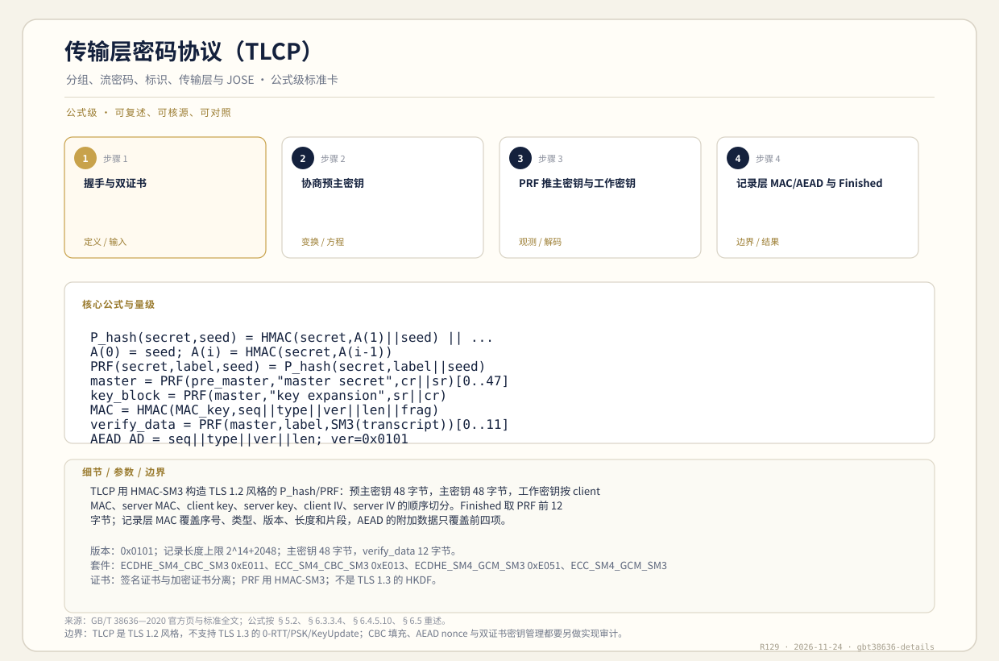
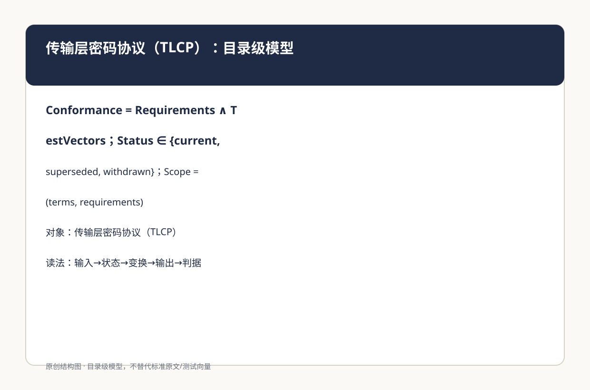

原理与机制
标准：传输层密码协议（TLCP）。TLCP 的密钥计算是 TLS 1.2 风格。先定义 (P_hash(secret,seed)=HMAC(secret,A_1|seed)|HMAC(secret,A_2|seed)|\cdots)，其中 (A_0=seed)、(A_i=HMAC(secret,A_{i-1}))；再定义 (PRF(secret,label,seed)=P_hash(secret,label|seed))。主密钥为 (PRF(pre_master,\text{“master secret”},client_random|server_random)[0..47])，固定 48 字节。工作密钥由 (PRF(master,\text{“key expansion”},server_random|client_random)) 生成 key_block，再按 client MAC、server MAC、client key、server key、client IV、server IV 的顺序切分。Finished 的 (verify_data) 取 (PRF(master,label,SM3(handshake_messages))[0..11])，固定 12 字节。记录层 MAC 覆盖 (seq|type|version|length|fragment)，AEAD 的附加数据覆盖 (seq|type|version|length)。

为什么重要
TLCP 常被误当成“国密版 TLS 1.3”。实际标准版本字段是 0x0101，密钥计算是 TLS 1.2 的 PRF/P_hash，不是 HKDF；它用 SM2 做身份鉴别与密钥交换、SM3 做杂凑、SM4 做记录层加密。双证书是另一个关键差异：签名证书只做身份鉴别，加密证书只做密钥交换，二者不能合并成一张证书。把 PRF、key_block、Finished、记录 MAC 写成公式，才能把“国密 TLS”与“TLS 1.3”区分开。
应用与实例
读握手时先看版本 0x0101 和套件 ID，再按双证书验证签名证书、用加密证书解出预主密钥。双方各自用 (client_random)、(server_random) 和预主密钥算 48 字节主密钥，再算 key_block；切分顺序不能颠倒。记录层若走 CBC，MAC 覆盖序号到片段；若走 GCM，附加数据只覆盖序号、类型、版本、长度，密文本身由 AEAD 认证。Finished 用 SM3 的握手 transcript，验证 12 字节 (verify_data)。

边界与攻击面
边界有四条。第一，TLCP 是 TLS 1.2 风格，不支持 TLS 1.3 的 0-RTT、PSK、KeyUpdate，也不能把 HKDF 的 (Extract/Expand) 套进来。第二，CBC 套件要正确处理填充与 MAC-then-Encrypt 的顺序，否则会出现填充 oracle 类问题；GCM 套件要保证 nonce 唯一。第三，双证书要求签名私钥与加密私钥分离，若把两张证书混用或让同一密钥承担两种用途，会破坏标准的用途分离。第四，标准规定协议与密钥计算，不替代实现侧信道、证书生命周期和部署审计。
历史与背景
GB/T 38636—2020 于 2020-04-28 发布、2020-11-01 实施，规定记录层协议、握手协议族和密钥计算；它把 TLCP 定位为传输层密码协议，适用于 SSL VPN 网关、浏览器等产品。标准中的套件用 SM2/SM3/SM4，并保留 RSA/IBC 等密钥交换分支；这里只重述标准文本，不把厂商实现或 TLS 1.3 的特性写成标准要求。
技术参数与复算边界
该条目的形式模型是 (S=\min_i S_i,\quad S_i\in{\text{密钥强度},\text{分组安全},\text{实现安全}})。输入：输入：传输层密码协议的公开参数、密钥/随机数与消息；变量说明：S 为综合安全强度；各分量取最小值，不能只看密钥位数。 预期输出：按 传输层密码协议 的规范执行后得到可验证的输出或可比较的优势界。 复算必须给出输入、步骤、输出和单位；示例只演示流程，不替代标准测试向量。
复杂度由密钥长度、分组/状态规模、轮数、随机数质量和敌手模型共同决定；参数越界、版本差异与实现侧信道都可能使公式结论失效。已登记限制：该条目只给出形式模型与可复算步骤，不声称已完成生产实现、侧信道认证或第三方安全评估。
逐步示例与核验
形式模型与复算步骤
[S=\min_i S_i,\quad S_i\in{\text{密钥强度},\text{分组安全},\text{实现安全}}]
传输层密码协议的公开参数、密钥/随机数与消息；变量说明：S 为综合安全强度；各分量取最小值，不能只看密钥位数。1.读取标准规定的密钥/分组/模式参数。2.按标准表换算等效强度。3.取最弱分量作为系统强度。边界：公式只覆盖已登记的参数与假设；参数取值、标准版本和实现细节仍以来源为准。
参考出处
- Wikipedia search entry for 传输层密码协议. https://zh.wikipedia.org/w/index.php?search=%E4%BC%A0%E8%BE%93%E5%B1%82%E5%AF%86%E7%A0%81%E5%8D%8F%E8%AE%AE
- Handbook of Applied Cryptography (Menezes, van Oorschot, Vanstone). https://www.cacr.math.uwaterloo.ca/hac/